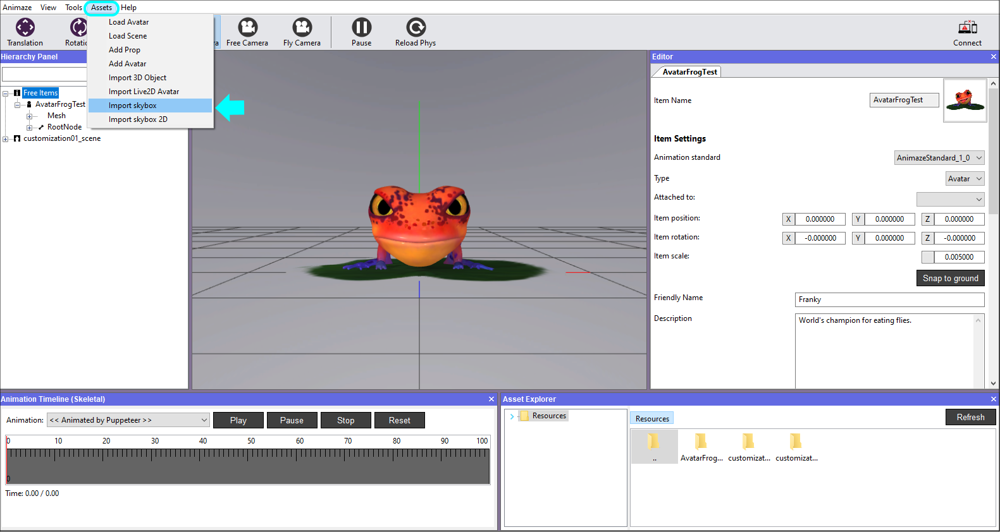
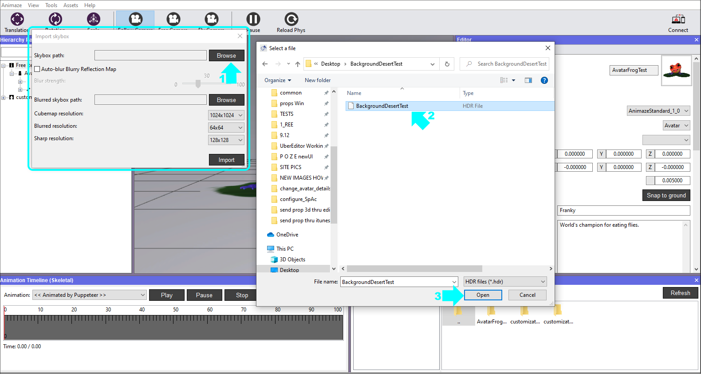
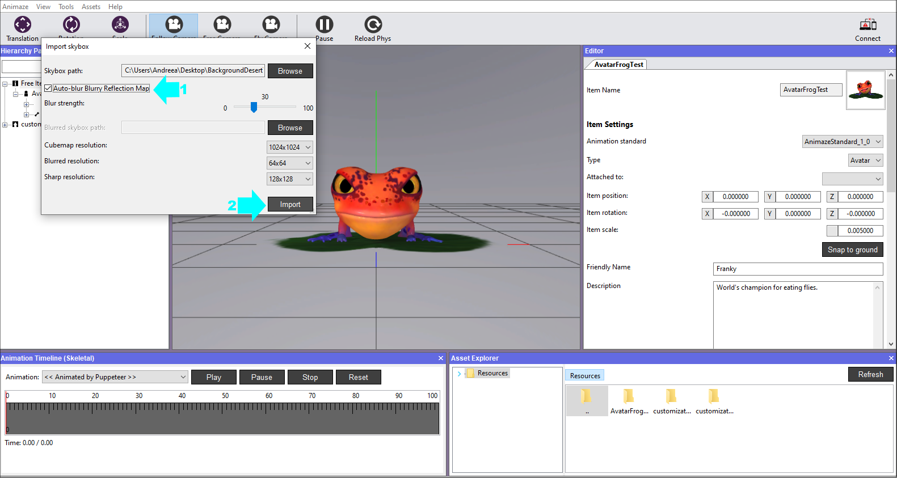
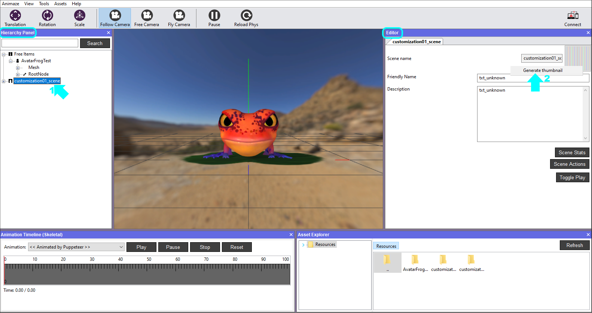
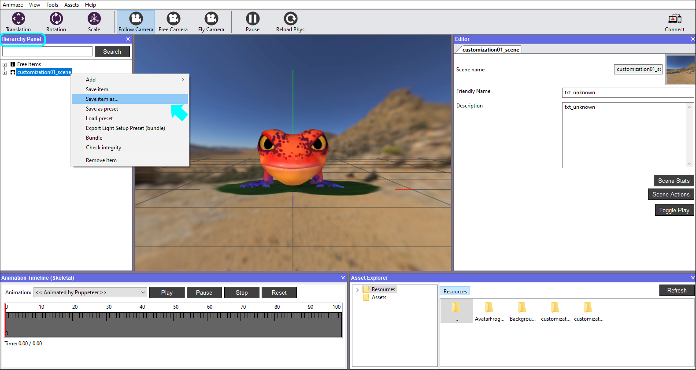
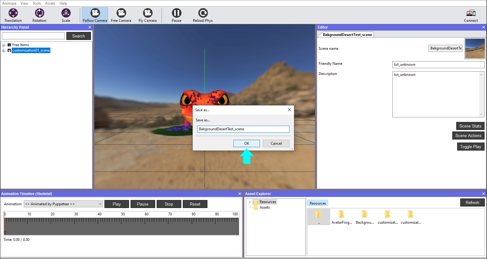
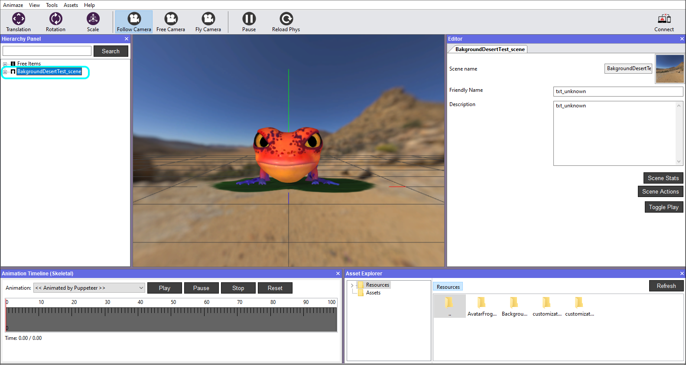
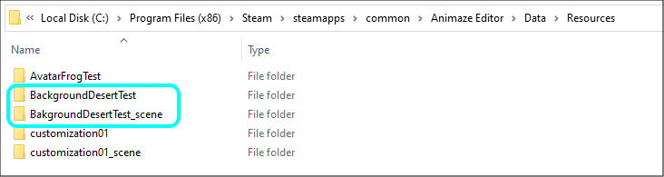

Import a background (skybox)
Animaze can import HDRI cubemaps (.hdr files) that are translated to Animaze-friendly cubes. We prepared a background that pictures a desert scene.
To ease asset management and make it clear what each asset's role is (i.e. avatar, prop or background), we are using a simple naming convention system that prefixes the asset type to the name of the assets. Here are the three examples:
* avatarName - for avatars
* propName - for props
* backgroundName - for backgrounds
To import a skybox, follow the steps below:
-
Download the Animaze Editor Sample Assets from this link and extract the files. Inside, you'll find a sample HDRI file BackgroundDesertTest/BackgroundDesertTest.hdr - this is our desert scene skybox.
-
Open the Animaze Editor, navigate to Assets and select Import skybox

-
In the Import skybox window, click on Browse and open the BackgroundDesertTest.hdr file you downloaded in the first step.

-
Mark the Autogenerate blurred image box to generate the blurry reflection map with the Blur Strength level set in the option immediately below.
The skybox (or background) import process generates three textures, one is the background that's rendered behind the avatar, the other two are reflection maps (blurry and sharp).
To detail, the three textures are:
* skybox/background texture is what gets rendered on screen directly
* blurry reflection map is what gets mapped as reflection on matte surfaces/meshes on avatars and props
* sharp reflection map is what gets mapped as reflection on glossy surfaces/meshes on avatars and props
This way the avatar will stand out in the scene, while the watcher’s eyes are not being distracted by the background elements. Click Import.

The background is now imported and visible in the viewport. In order for it to be recognized by the system in the app, it will need an icon image, so let’s create it.
-
Click on the customization01_scene in the Hierarchy Panel, the details of the scene are now displayed in the Editor Panel to the right. Right click on the current icon and then select Generate thumbnail.

-
The new icon is ready and applied in real-time. Save the new scene by choosing Save item as in the Hierarchy Panel and write a new name for it. We chose to save it as BakgroundDesertTest_scene, then click OK. It will create a different folder in Resources directory and save it outside the original version, as a new scene.


-
The new scene is loaded

This is how the structure folder will look like:

Congrats! You’ve successfully imported the background :)